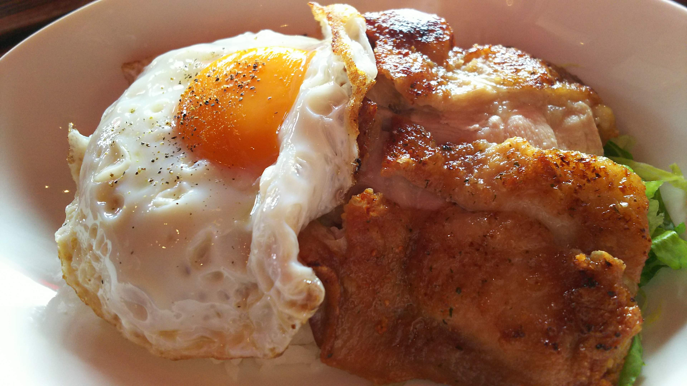

リンクから各地のSUNABACO周辺のおすすめ飲食店を見ることができます。
SUNABACOコザ

photo by しょーやさん
コンビニが豊富！！多国籍な料理が味わえます！
コザグルメ
SUNABACO江別
プログラミングスクールの講義中にパンドラカレーが食べられるSUNABACO江別！！
エベツグルメ
SUNABACO高松
ゆーたろーコーヒが飲みたい方は、SUNABACO高松へ！！
タカマツグルメ
SUNABACO八代
Natural sweets and + Snowman
あっさりとした２種類のクリームとしっとりした皮のシュークリーム
こんなおいしいケーキ屋さんが歩いて30秒にある魔窟！SUNABACOやっちろにおいでよ！！
やっちろグルメ
SUNABACOいどば
イドバグルメ